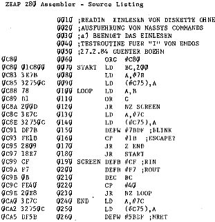
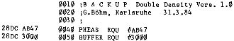

80-Bus Journal |
Jan/Feb/März 1984 · Ausgabe 1 |
anstelle der Tastatur von der Diskette lesen, oder die Diskette anstelle eines Druckers etc, als Ausgabekanal benutzen. Die Ausgabe ist einfach, beim Einlesen muß man aber beachten, daß Nassys im Editiermodus eingelesene Zeichen als Befehle interpretiert und auch versucht, sie auszuführen!
Nach Ausführung des I- oder O-Befehls wird nach Nassys gesprungen. Wenn Sie nun die Tastatur benutzen, wird automatisch auf die Diskette geschrieben. Sollten Sie ein Programm starten, das die Disketten-Ausgaberoutine benutzen soll, so wird eben auch der Startbefehl auf der Diskette gespeichert.
Rückkehr zu EMDOS schließt die „geöffnete“ Datei erst wieder ab. Vorher dürfen Sie nicht die Diskette wechseln, da sonst auf der neuen Diskette wild herumgeschrieben wird!
Im folgenden finden Sie ein Programm, das von der Diskette auf den Bildschirm liest. Es muß allerdings noch optimiert werden, da es nur 200 Bytes liest und dann auf einen Tastendruck wartet. (Dies, um nicht gleich mehrere Bildschirme hintereinander vollzuschreiben). Ich wollte mit der Cursoradresse (C29H) arbeiten, um festzustellen, wann der Bildschirm voll ist, aber mit EMDOS habe ich das auf die Schnelle nicht richtig in den Griff bekommen. Wer macht’s?

Auf der Diskette, die wir zu diesem Heft anbieten, befindet sich als Hexdump die Version READIN.NAS. Damit kann man die Dokumentationen auf der Diskette, die nur einen Bildschirm umfassen, einwandfrei einlesen. Für längere Texte müßte aber READIN.ASS verwendet werden, das wie oben beschrieben arbeitet.
Wenn EMDOS von Maschinenprogrammen benutzt werden soll, wird der Akku jeweils mit der benötigten Fuktionsnummer geladen und dann ein CALL nach C1DH ausgeführt (=ARG9+1).
So würde die Folge
LD A,#61 CALL #C1D
eine Datei auf die Diskette schreiben.
Allerdings sind dabei immer mehrere Parameter an EMDOS zu übergeben. Ich habe selbst noch nicht EMDOS in ein Maschinenprogramm eingebunden. Bisher fehlte die Zeit. Vielleicht versucht’s mal einer der Leser, damit wir im nächsten Heft ein kleines Programm mit Diskettenbenutzung veröffentlichen können. Hier nun die Funktionsnummern und die zugehörigen Aktionen von EMDOS:
FIREAD | #60 File lesen |
FIWRI | #61 File schreiben |
FILOAD | #62 File laden |
FISAVE | #63 File abspeichern |
FIHEA1 | #64 Fileheader versorgen 1 |
FIHEA2 | #65 Fileheader versorgen 2 |
FIHEAR | #66 Fileheader lesen |
Soweit ich das verstanden habe, ist --- ------ ------ Adresse in HL, an der der Name im Speicher beginnt. Der Name wird durch Space beendet.
Und nun drücke ich die Daumen, für eigene Programmierversuche mit EMDOS.

| Seite 47 von 52 |
|---|